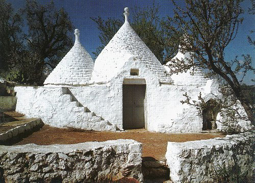
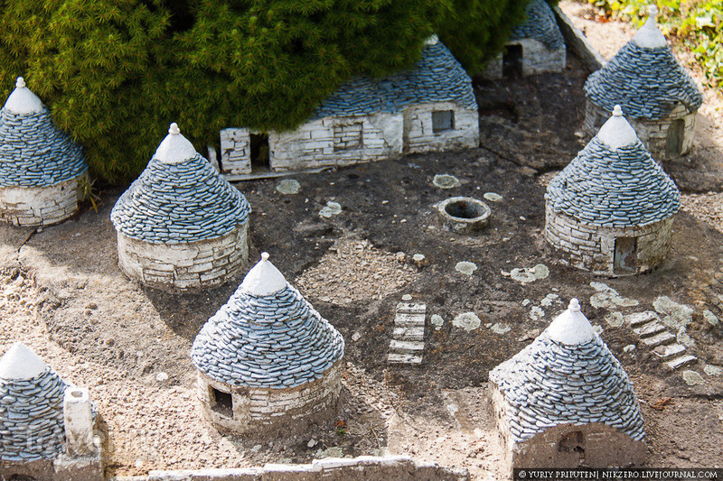
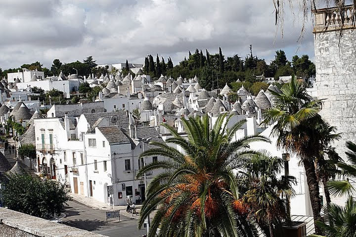

Знаходиться це дивовижне містечко в провінції Барі, італійського регіону Апулія. Городок розташовується на двох розділених річкою пагорбах. На східному стоїть сучасний Альберобелло, а на західному - знаменитий своїми унікальними середньовічними спорудами Трулло.
Самобутні споруди під назвою «трулли» надають Альберобелло неповторну унікальність. Ці незвичайні білі будиночки з конусоподібними дахами утворюють цілі вулиці. Оригінальні, схожі на казкові житла трулли розташовуються в двох районах міста - в районі Монті і в районі Айя - Піккула. Основна особливість будівель полягає в тому, що вони зводилися без використання будь-яких зміцнювальних розчинів, і робилося це зовсім не випадково.
У 16-17 століттях в Неаполітанському королівстві існував закон, обкладається спеціальним податком всі міські поселення. Щоб заощадити на податках перевищує містом династія Аквавіва забороняла своїм селянам будувати міцні будинки з використанням цементу. Місцеві жителі знайшли спосіб організувати собі дах над головою і одночасно догодити правлячим феодалам. Вони придумали будинки круглої форми з викладеними камінням куполоподібними дахами, які легко було зруйнувати, якщо в поселення приїжджали збирачі подате
Куполи Труллі прикрашалися маківками різної форми, які, як вважають деякі вчені, свідчили про майстерність будівельника і про стані, до якого належав господар будинку. Крім того купола прикрашалися особливими містичними знаками, які до цих пір можна побачити на дахах прекрасно збережених Труллі.
У 1797 році спеціальним указом короля Неаполя Фердинанда IV Бурбона місто Альберобелло отримав свободу і необхідність у постійному будівництві та руйнуванні будинків у жителів відпала.
Сучасний Альберобелло - це прекрасна туристична пам'ятка. Влітку тут регулярно проводяться концерти та вечори поезії, джазові фестивалі, можна придбати гарячі путівки на Самуї і добре відпочити. У 1996 році Трулло увійшли до списку Всесвітньої спадщини ЮНЕСКО.
